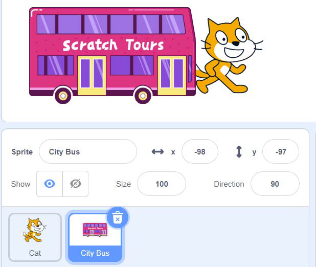
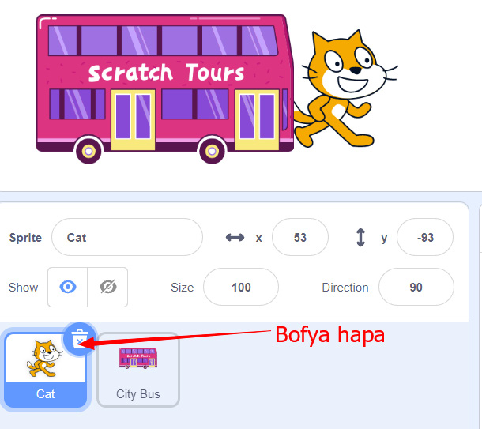

Maelezo ya programu fikivu ya Quorum: Sprite ya City Bus imechaguliwa kwenye Scratch au Quorum, huku basi na paka wakionekana juu ya skrini.Kielelezo namba 55: baada ya kuongeza ‘Sprite’ wa pili.
5.Kumwondoa ‘Sprite’ mmoja, bofya au tumia mishale kwenye Sprite ‘Cat’ kisha bofya au tumia mishale alama ya kufuta kama inavyoonekana katika Kielelezo namba 56.

Maelezo ya programu fikivu ya Quorum: Sprite ya Cat imechaguliwa kwenye Scratch au Quorum, na mshale unaonyesha kitufe cha kufuta ili kumwondoa paka.
Bofya au tumia mishale hapa
Kielelezo namba 56: kumwondoa ‘Sprite’ ‘Cat’.
6.Baada ya hapo, utabaki na ‘Sprite’ mmoja anayeitwa ‘City Bus’ kama inavyoonekana katika Kielelezo namba 57.